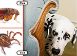

Pet Care & Tips
Canine Tooth-Brushing Kit
Get yourself a toothbrush made especially for canines or a clean piece of soft gauze to wrap around your finger. Ask your vet for a toothpaste made especially for canines or make a paste out of baking soda and water. Never use fluoride with dogs under six months of age—it can interfere with their enamel formation. And please do not use human toothpaste, which can irritate a dog’s stomach. Special mouthwash for dogs is also available—ask your vet.
Fleas and Ticks

Since fleas and ticks lurk in tall brush and grasses, it's important to keep those lawns mowed and trim. Fleas can cause excessive scratching, hair loss, scabs, hot spots and tapeworms as well as anemia from blood loss in both cats and dogs. Ticks can cause similar effects and lead to a variety of complications from tick-borne diseases such as Lyme disease, Rocky Mountain spotted fever and Babesia.
Allergy-Causing Flora
Ah-choo! Like their sneezy human counterparts, pets have allergies to foods, dust and even plants. Allergic reactions in dogs and cats can even cause life-threatening anaphylactic shock if the reaction is severe. If you do suspect your pet has an allergy, please don't give him any medication that isn't prescribed by a veterinarian. It's also smart to keep your pet out of other people's yards, especially if you're unsure of what kinds of plants or flowers lurk there. Keeping your pet off the lawn of others will make for healthy pets and happy neighbors.